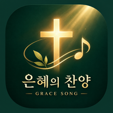

오늘 어떤 찬양을 찾고 있나요?
친구 관계, 성적 고민, 진로, 불안 등 고민을 편하게 적어 주세요. 예: 성적이 떨어져서 속상하고 지칠 때.
추천 찬양
마음을 입력하면 이곳에 찬양이 추천됩니다.
안전성 안내
찬양이나 단체의 신앙적·교단적 적합성은 제목만으로 판정할 수 없습니다. 이 체험판은 공식 검증기관의 최신 자료를 자동 조회하지 않으므로, 모든 곡의 상태를 '확인 필요'로 표시합니다.

찬양이나 단체의 신앙적·교단적 적합성은 제목만으로 판정할 수 없습니다. 이 체험판은 공식 검증기관의 최신 자료를 자동 조회하지 않으므로, 모든 곡의 상태를 '확인 필요'로 표시합니다.